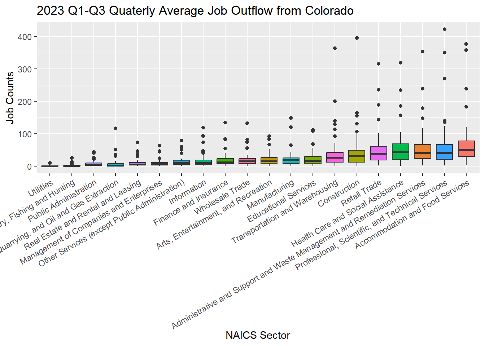
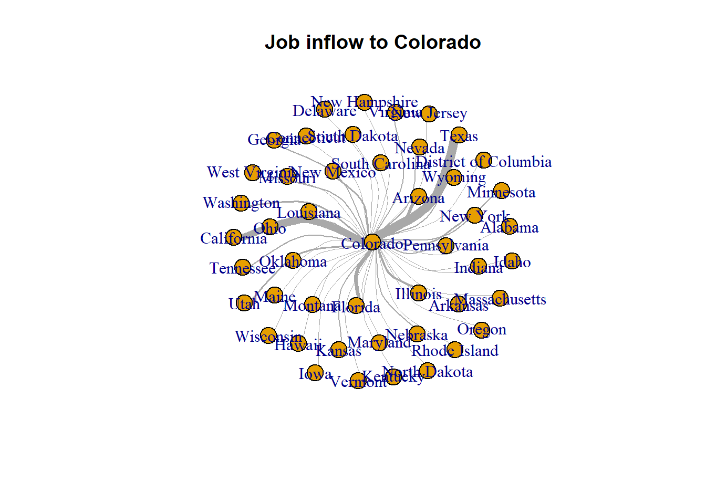
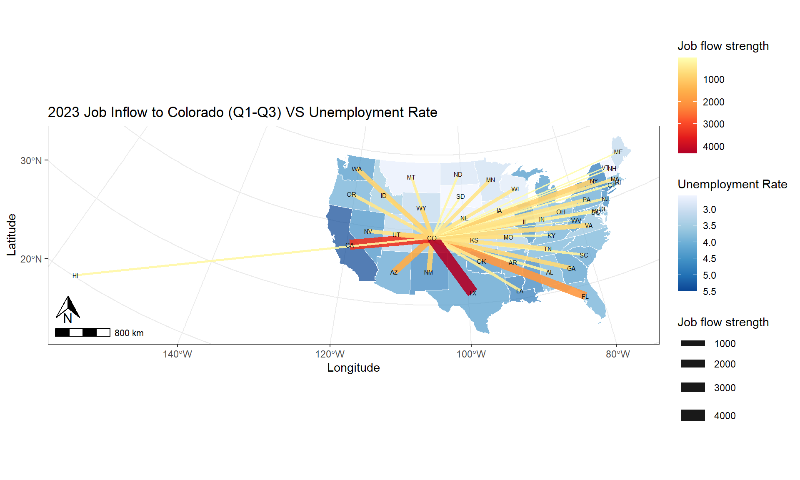

Chapter 8: Network Visualization
8.1 Lab Goals
In this chapter, you will learn
- clean & organize network data
- create network based on nodes and edges
- map network
- Build interactive sankey chart to visualize non-spatial networks
8.2 Good Practice
8.2.1 Organizing Folders & Sub-folders
Under the course folder, please create a folder called “lab8”. Next, in the lab8 folder, please create two sub-folders that one is called “data” and another one is “plot”.
8.2.2 Data
This chapter explores the Longitudinal Employer-Household Dynamics data from US Census. Particularly, we will play with the Job-to-Job Flows (J2J).
Job-to-Job Flows (J2J) is a set of statistics on job mobility in the United States. J2J include statistics on:
- the job-to-job transition rate,
- hires and separations to and from employment,
- earnings changes due to job change, and
- characteristics of origin and destination jobs for job-to-job transitions.
These statistics are available at the national, state, and metropolitan area levels and by worker and firm characteristics.
Please follow the steps below to download data, unzip it and move the data to the required folder.
- Go to https://github.com/fuzhen-yin/uccs_geoviz/blob/main/archive/data/lab8_data.zip
- Download the file “lab8_data.zip”
- Unzip folder “lab8_data.zip”
- Move all files from the “lab8_data” folder to the “data” folder under “lab8” see
If there you have any questions about the above-mentioned steps, please refer to Chapter 3.2.3 for detailed instructions.
8.2.3 Launching R Studio
Again, we would like to start a new project from scratch with a clean R Script. Please do the following steps. If you have any questions about these steps, please refer to the relevant chapters for help.
- Step 1: Make sure all existing R projects are properly
closed.
- If not, please close it by going to File –> Close Project –> Save changes (see Chapter 2.5).
- Step 2: Create a New Project using Existing Directory, navigate to lab8, click open, then Create Project. (see Chapter 1.3).
- Step 3: Create a New Script by go to File –> New File –> R Script. Save the script by giving it a proper name.
8.2.4 Before Start
Heads-Up!
All scripts are non-copyable except for the FUNCTION cell in Section 8.6.4.
8.3 Library & Data
8.3.1 Load Libraries
# Library ----
library(dplyr)
library(data.table)
library(sf)
library(igraph) # network object
library(randomcoloR) # random color generator
library(tidyverse)
library(purrr) # random color generator
library(ggplot2) # plot
library(ggspatial) # north arrow in ggplot
library(networkD3) # sankey network 8.3.2 Data
## US Census ----
### State boundaries (simple features)
sf_us_state <- st_read("data/cb_2023_us_state/cb_2023_us_state_5m.shp")## Reading layer `cb_2023_us_state_5m' from data source
## `D:\OneDrive\UCCS\Teaching\GES4070_5070_GeoViz\Labs\01_git_wk\00_code_uccs_geoviz\data\cb_2023_us_state\cb_2023_us_state_5m.shp'
## using driver `ESRI Shapefile'
## Simple feature collection with 56 features and 9 fields
## Geometry type: MULTIPOLYGON
## Dimension: XY
## Bounding box: xmin: -179.1473 ymin: -14.55255 xmax: 179.7785 ymax: 71.35256
## Geodetic CRS: NAD83# 2023 Q1-Q3 Job-to-job flow (j2j) ----
### job outflows: separations from COLORADO
j2j_from_co <- read.csv("data/cln_j2j_outflow_from_colorado.csv")
### job inflows: hires to COLORADO
j2j_to_co <- read.csv("data/cln_j2j_inflow_to_colorado.csv")
### job inflow to CO between industry
j2j_inflow_industry <- read.csv("data/j2j_inflow_CO_industry_table.csv")8.4 J2J Viz: J2J Flow by Industry
8.4.1 Exploring the J2J network data
[Q1]: Have a look at the job outflow dataset j2j_from_co and provide a brief description for each column’s content.
## Examine the outflow data
View(j2j_from_co) [Q2]: Both data frames j2j_from_co and j2j_to_co tell about the job flows related to Colorado. Please compare the two columns from_state, to_state and compare how j2j_from_co and j2j_to_co different.
## Examine the inflow data
View(j2j_to_co) 8.4.2 Data cleaning
The column avg_n_job has NA values. For example, the job outflow from Colorado to Alaska in Agriculture, Forestry, Fishing and Hunting industry is NA.
### NA values
j2j_from_co[2, "avg_n_job"]# Remove rows with NA
j2j_from_co_cln <- j2j_from_co %>% na.omit()
j2j_to_co_cln <- j2j_to_co %>% na.omit()8.4.3 Exploratory Analysis
Let’s use boxplots to compare job flows by industry. > Boxplot is a statistical visualization that displays the 1st quantile (25%), median, 3rd qunatile (75%) and outliers.
8.4.3.1 job INFLOW by industry
[Q3]: What are the top three industries with the highest median values in job INFLOW to Colorado?
##### data preparation
data <- j2j_to_co_cln
#### box plot, reorder by median
ggplot(data = data, aes(x = reorder(naics_sector, avg_n_job), y=avg_n_job, fill =naics_sector )) +
geom_boxplot() +
xlab("NAICS Sector") +
ylab("Job Counts") +
ggtitle("2023 Q1-Q3 Quaterly Average Job Inflow to Colorado") +
theme(legend.position = "none",
axis.text.x = element_text(angle = 30, vjust = 1, hjust=1)) 8.4.3.2 job OUTFLOW by industry
[Q4]: What are the top three industries with the highest median values in job OUTFLOW from Colorado?
##### data preparation
data <- j2j_from_co_cln
#### box plot, reorder by median
ggplot(data = data, aes(x = reorder(naics_sector, avg_n_job), y=avg_n_job, fill =naics_sector )) +
geom_boxplot() +
xlab("NAICS Sector") +
ylab("Job Counts") +
ggtitle("2023 Q1-Q3 Quaterly Average Job Outflow from Colorado") +
theme(legend.position = "none",
axis.text.x = element_text(angle = 30, vjust = 1, hjust=1)) 
8.5 J2J Viz: Flow Network
Let’s prepare the data a little bit by combining the inflow and outflow data together, and count the total job flows in all industry sectors. #### 8.5.1 Data Preparation
### combine inflow & outflow dataframe together
j2j_co_bysector <- rbind(j2j_from_co_cln, j2j_to_co_cln)
### combine all sectors together by counting the
j2j_co_aggsector <- aggregate(avg_n_job ~ from_state + to_state + direction,
data = j2j_co_bysector %>% select(-naics_sector),
FUN = sum)
j2j_co_aggsector$naics_sector <- "all_sectors"
## have a look at the combined dataset
head(j2j_co_aggsector)## from_state to_state direction avg_n_job naics_sector
## 1 Alabama Colorado inflow_to_co 271 all_sectors
## 2 Arizona Colorado inflow_to_co 1534 all_sectors
## 3 Arkansas Colorado inflow_to_co 226 all_sectors
## 4 California Colorado inflow_to_co 3291 all_sectors
## 5 Connecticut Colorado inflow_to_co 163 all_sectors
## 6 Delaware Colorado inflow_to_co 33 all_sectors## combine the two dataframes "j2j_co_bysector" and "j2j_co_aggsector" by rows
j2j_co <- rbind(j2j_co_aggsector, j2j_co_bysector)## Have a look at the final dataset
View(j2j_co)Create a list of unique states and a list of unique NAICS sectors.
### list of unique states in j2j_co
lt_state <- unique(c(j2j_co$from_state, j2j_co$to_state))
print(lt_state)## [1] "Alabama" "Arizona" "Arkansas"
## [4] "California" "Connecticut" "Delaware"
## [7] "District of Columbia" "Florida" "Georgia"
## [10] "Hawaii" "Idaho" "Illinois"
## [13] "Indiana" "Iowa" "Kansas"
## [16] "Kentucky" "Louisiana" "Maine"
## [19] "Maryland" "Massachusetts" "Minnesota"
## [22] "Missouri" "Montana" "Nebraska"
## [25] "Nevada" "New Hampshire" "New Jersey"
## [28] "New Mexico" "New York" "North Dakota"
## [31] "Ohio" "Oklahoma" "Oregon"
## [34] "Pennsylvania" "Rhode Island" "South Carolina"
## [37] "South Dakota" "Tennessee" "Texas"
## [40] "Utah" "Vermont" "Virginia"
## [43] "Washington" "West Virginia" "Wisconsin"
## [46] "Wyoming" "Colorado"### list of unique naics sectors in j2j_co
lt_sector <- unique(j2j_co$naics_sector)
print(lt_sector)## [1] "all_sectors"
## [2] "Agriculture, Forestry, Fishing and Hunting"
## [3] "Mining, Quarrying, and Oil and Gas Extraction"
## [4] "Utilities"
## [5] "Construction"
## [6] "Manufacturing"
## [7] "Wholesale Trade"
## [8] "Retail Trade"
## [9] "Transportation and Warehousing"
## [10] "Information"
## [11] "Finance and Insurance"
## [12] "Real Estate and Rental and Leasing"
## [13] "Professional, Scientific, and Technical Services"
## [14] "Management of Companies and Enterprises"
## [15] "Administrative and Support and Waste Management and Remediation Services"
## [16] "Educational Services"
## [17] "Health Care and Social Assistance"
## [18] "Arts, Entertainment, and Recreation"
## [19] "Accommodation and Food Services"
## [20] "Other Services (except Public Administration)"
## [21] "Public Administration"8.5.2 Quick Network Plot
Since we have combined the job “inflow” and “outflow” in different sectors together into a single dataframe j2j_co. We can now filter records from this main data frame.
### visualize job inflow network in "all_sectors"
data <- j2j_co %>% filter(naics_sector == "all_sectors",
direction == "inflow_to_co")[Q5]: Have a look at the data, and explain what it shows?
View(data)Let’s create a network object from the dataframe.
graph_from_data_frame()is a function that creates an igraph graph from one or two data frames containing the (symbolic) edge list and edge/vertex attributes.
# create network
network <- graph_from_data_frame(d=data, directed=T)
# get network summary
summary(network)## IGRAPH 7eacfa4 DN-- 47 46 --
## + attr: name (v/c), direction (e/c), avg_n_job (e/n), naics_sector
## | (e/c)### quick plot
plot(network, edge.arrow.size=0.2)
Let’s improve the network by configuring the edge width so that it is proportional to the count of “avg_n_job” in all sectors
plot(network, vertex.size = 10,
edge.arrow.size = 0.2,
edge.width=E(network)$avg_n_job * 0.002,
edge.curved = TRUE, main = "Job inflow to Colorado")
8.6 Mapping J2J Network
8.6.1 Data Preparation
Prepare state boundaries
#### project to sf_us_state to CRS NAD83 / Colorado North (ftUS)
sf_us_state_j2j <- sf_us_state %>%
filter(NAME %in% lt_state) %>% st_transform(., 2231)Prepare network nodes
#### get state centroid
df_node <- sf_us_state_j2j %>% st_centroid()
#### split point data into lat & long
df_node <- df_node %>% mutate(long = unlist(map(df_node$geometry, 1)),
lat = unlist(map(df_node$geometry, 2)))
#### remove geometry
st_geometry(df_node) <- NULL
## Check the data
head(df_node)## STATEFP STATENS GEOIDFQ GEOID STUSPS NAME LSAD ALAND
## 1 35 00897535 0400000US35 35 NM New Mexico 00 314198587197
## 2 48 01779801 0400000US48 48 TX Texas 00 676686238592
## 3 21 01779786 0400000US21 21 KY Kentucky 00 102266598312
## 4 39 01085497 0400000US39 39 OH Ohio 00 105823831336
## 5 13 01705317 0400000US13 13 GA Georgia 00 149485311347
## 6 05 00068085 0400000US05 05 AR Arkansas 00 134660466558
## AWATER long lat
## 1 726463919 2813962 -799042.3
## 2 18982083586 4950201 -1816478.6
## 3 2384223544 8812324 1009637.3
## 4 10274524796 9265129 2154720.5
## 5 4419673221 9781161 -599407.7
## 6 3122251184 6918226 -331098.9#### create a simplified version that only contains the node's name, latitude, and longitude
df_node_name <- df_node[c("NAME","long","lat")]
## Check the data
head(df_node_name)## NAME long lat
## 1 New Mexico 2813962 -799042.3
## 2 Texas 4950201 -1816478.6
## 3 Kentucky 8812324 1009637.3
## 4 Ohio 9265129 2154720.5
## 5 Georgia 9781161 -599407.7
## 6 Arkansas 6918226 -331098.9Prepare network edges
## get the coordinates for the start and end points of edges
j2j_co_xy <- j2j_co %>% left_join(., df_node_name, by=c("from_state"="NAME")) %>%
setnames(old=c("long","lat"), new=c("long_start","lat_start")) %>%
left_join(., df_node_name, by=c("to_state"="NAME")) %>%
setnames(old=c("long","lat"), new=c("long_end","lat_end"))8.6.2 Quick Map of J2J Network
## filter data
data <- j2j_co_xy %>% filter(direction == "inflow_to_co", naics_sector == "all_sectors")
#### plot
p0_inflow <- ggplot(sf_us_state_j2j) +
geom_sf() +
geom_segment(data = data,
aes(x = long_start, y = lat_start,
xend = long_end, yend = lat_end, linewidth = avg_n_job, alpha = 0.5)) +
scale_size_continuous(range = c(0.1, 3)) +
geom_point(data =df_node , aes(x = long, y = lat), # draw nodes
shape = 18, fill = "white",
color = 'black', stroke = 0.5) +
geom_text(data =df_node, aes(x = long, y = lat, label = NAME), size=2) +
ggtitle("Job Inflow to Colorado") +
xlab("Latitude") +
ylab("Longitude")
p0_inflow
8.6.3 Map Improvement
Make edge color scale to the strength of job flow; use state abbreviation
p0_1 <- ggplot(sf_us_state_j2j) +
geom_sf(fill = "white") +
geom_segment(data = data,
aes(x = long_start, y = lat_start,
xend = long_end, yend = lat_end, linewidth = avg_n_job, colour = avg_n_job),
alpha = 0.8) +
scale_colour_gradient(low="#FFFFC5", high = "blue") +
scale_size_continuous(range = c(0.001, 5)) +
geom_text(data =df_node, aes(x = long, y = lat, label = STUSPS), size=2) +
ggtitle("Job Inflow to Colorado") +
theme_bw() +
ylab("Latitude") +
xlab("Longitude")
print(p0_1)
## add north arrow and scale bars
p0_2 <- p0_1 + annotation_scale(location = "bl", width_hint = 0.1) +
annotation_north_arrow(location = "bl",
pad_x = unit(0.1, "in"),
pad_y = unit(0.3, "in"),
height = unit(0.3, "in"),
width = unit(0.3, "in"))
print(p0_2)
8.6.4 Function
Let’s create a function to automate the mapping process and use it to plot j2j flow by industry sectors.
HINT: The code below is COPYABLE
### create a function to plot job outflow by sectors
map_j2j <- function(idx, full_data, state_boundary, state_point, c_direction, c_sector, edge_color){
# extract data
data <- full_data %>% filter(direction == as.character(c_direction),
naics_sector == as.character(c_sector))
# create title label
title <- paste("Job-to-job", as.character(c_direction), as.character(c_sector), sep=" ")
# create plot
p <- ggplot(state_boundary) +
geom_sf(fill = "white") +
geom_segment(data = data,
aes(x = long_start, y = lat_start,
xend = long_end, yend = lat_end, linewidth = avg_n_job, alpha = 0.9, colour = avg_n_job)) +
scale_colour_gradient(low="#FFFFC5", high = edge_color) +
scale_size_continuous(range = c(0.01, 4)) +
geom_point(data =state_point , aes(x = long, y = lat), # draw nodes
shape = 18, fill = "white", size=1,
color = 'grey', stroke = 0.5) +
geom_text(data =state_point, aes(x = long, y = lat, label = STUSPS), size=2) +
ggtitle(title) +
theme_bw() +
ylab("Latitude") +
xlab("Longitude")
p <- p + annotation_scale(location = "bl", width_hint = 0.1) +
annotation_north_arrow(location = "bl",
pad_x = unit(0.1, "in"),
pad_y = unit(0.3, "in"),
height = unit(0.3, "in"),
width = unit(0.3, "in"))
pdf(sprintf("plot/p%s_%s.pdf", idx, title), width = 10, height = 5)
print(p)
dev.off()
}Apply the function map_j2j to automate the mapping process. The graphics are saved to the plot folder. You should see a list of files as shown in the screenshot below.
[Q6] Please pick 2 plots to discuss
your findings. Hint: the data frame j2j_co
contains the original data of the plots.
n <- length(lt_sector)
col_random <- randomColor(n)
for (i in 1:length(lt_sector)) {
edge_color = col_random[[i]]
sector_toviz <- lt_sector[[i]]
map_j2j(i, j2j_co_xy, sf_us_state_j2j, df_node, "outflow_from_co", sector_toviz, edge_color)
}
8.7 Sankey Chart of Flow Between Industries
This section produces an interactive sankey chart to visualize j2j flows from top 10 industries to top 10 industries in Colorado. #### 8.7.1 Data preparation
# tidy and clean the data
j2j_inflow_ind_cln <- j2j_inflow_industry %>%
pivot_longer(cols = 2:ncol(.), names_to = "to_co_sector", values_to = "avg_n_job" ) %>%
filter(!to_co_sector %like% ".flag") %>%
na.omit() %>%
setnames(old="X", new="from_sector") %>%
select(from_sector, to_co_sector, avg_n_job)
# clean sector names to make them consistent
j2j_inflow_ind_cln$to_co_sector <- j2j_inflow_ind_cln$to_co_sector %>%
gsub("\\.\\.", ", ", .) %>%
gsub("\\.", " ", .) %>%
gsub("Other Services, except Public Administration", "Other Services (except Public Administration)", .) %>%
gsub("^\\s+|\\s+$", "", .)Prepare network data: edge & node
# edges
df_edge <- j2j_inflow_ind_cln
# top 10 industry with highest inflow to colorado
df_ten_industry <- df_edge %>% select(to_co_sector, avg_n_job) %>%
group_by(to_co_sector) %>%
summarise(n_ttl = sum(avg_n_job)) %>%
slice_max(n_ttl, n=10)
# extract edges from and to the top ten industries
df_edge <- df_edge %>%
filter(from_sector %in% df_ten_industry$to_co_sector) %>%
filter(to_co_sector %in% df_ten_industry$to_co_sector)
# add space to "to_co_sector"
df_edge$to_co_sector <- paste(df_edge$to_co_sector, " ", sep="")# nodes
df_node <- data.frame(name = unique(c(df_edge$from_sector,
df_edge$to_co_sector)))
# edges add id for nodes
df_edge$id_from <- match(df_edge$from_sector, df_node$name) - 1
df_edge$id_to <- match(df_edge$to_co_sector, df_node$name) - 1 8.7.2 Sankey Chart
# interactive sankey chart - network
sankeyNetwork(Links = df_edge, Nodes = df_node,
Source = "id_from", Target = "id_to",
Value = "avg_n_job", NodeID = "name",
sinksRight=FALSE, nodeWidth=15, fontSize=10, nodePadding=10)8.8 Close & Exit
Congratulations!! You have completed the entire tutorial and learnt the intro to network visualization!! Excellent work.
Please go “File”–> “Close Project” – a pop window asking “Do you want to save these changes” –> “Yes”.
Don’t forget to submit the lab8 report and your script to Canvas.